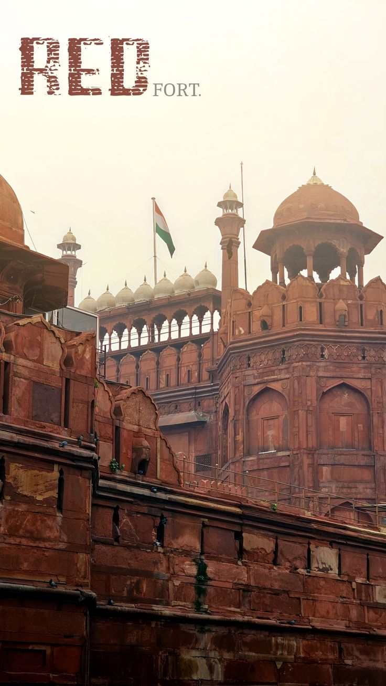
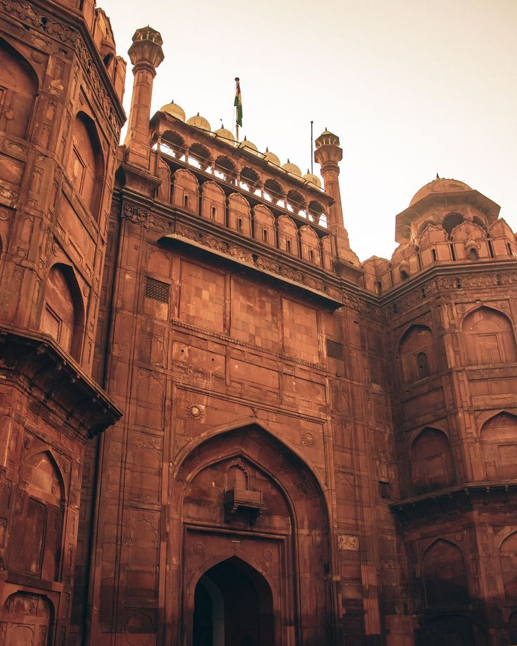
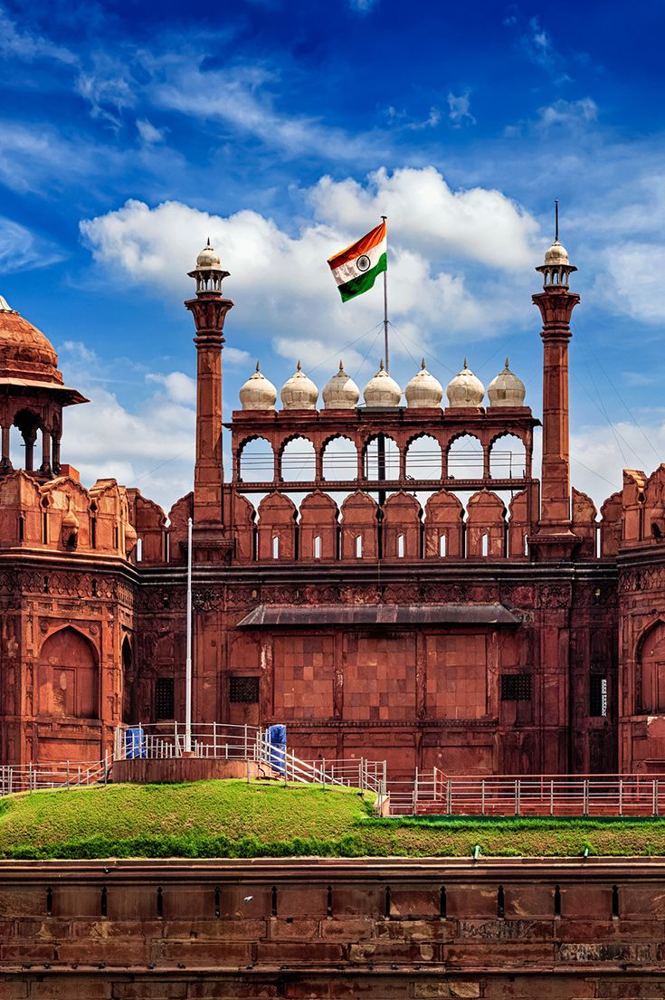
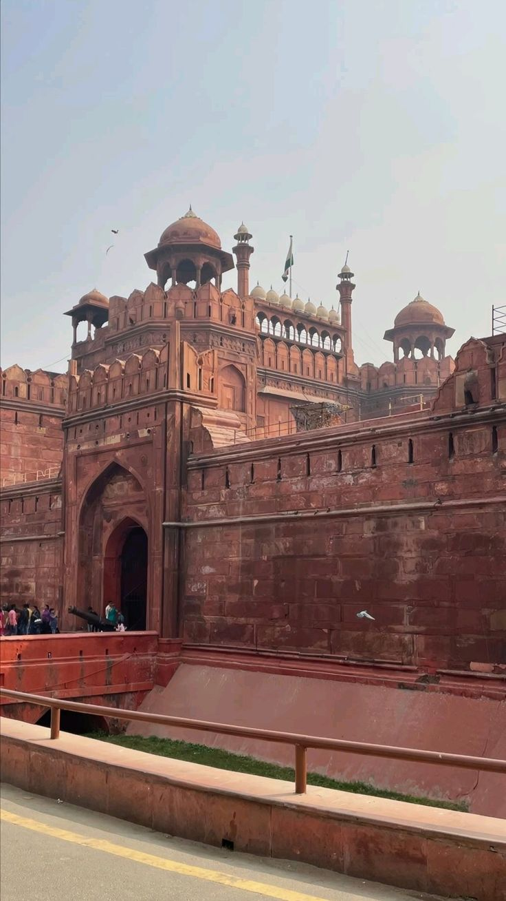
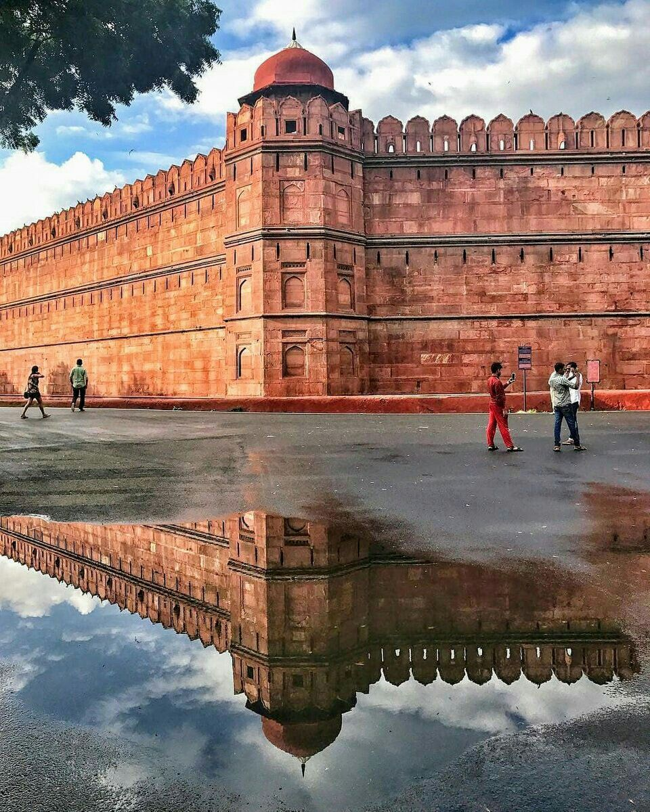
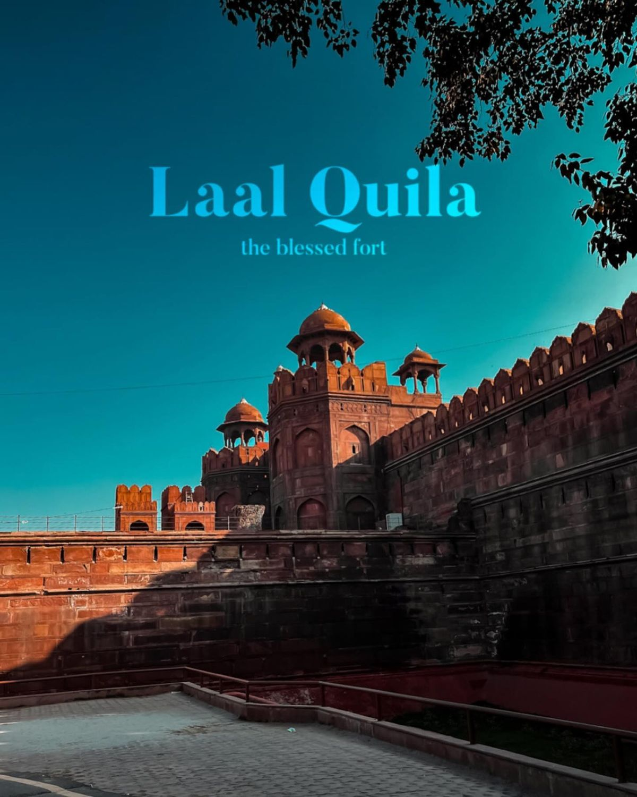

Experience the Royal Legacy of India

The Red Fort is one of the most famous historical monuments in India, located in Delhi. It served as the main residence of Mughal emperors for many years.
The fort is known for its massive red sandstone walls and grand architecture. It reflects the richness of Mughal culture and design.

The Red Fort was built by Mughal Emperor Shah Jahan in 1638 when he shifted his capital from Agra to Delhi.
The construction took nearly 10 years and was completed in 1648. It became the center of political power during the Mughal era.
The fort witnessed many historical events including invasions and colonial rule.

The Red Fort is a brilliant example of Mughal architecture. It combines Persian, Islamic, and Indian styles.
It includes beautiful palaces, halls, gardens, and decorative elements.
Important structures inside the fort include Diwan-i-Aam, Diwan-i-Khas, and Rang Mahal.

The Red Fort is a powerful symbol of India's independence. It played an important role during the freedom struggle.
Every year on Independence Day, the Prime Minister hoists the national flag here and addresses the nation.
This tradition makes it one of the most important national monuments.

Today, the Red Fort is one of the most visited tourist attractions in India. It attracts visitors from all over the world.
The fort hosts cultural events and light-and-sound shows that tell the story of its history.
It is also recognized as a UNESCO World Heritage Site.
